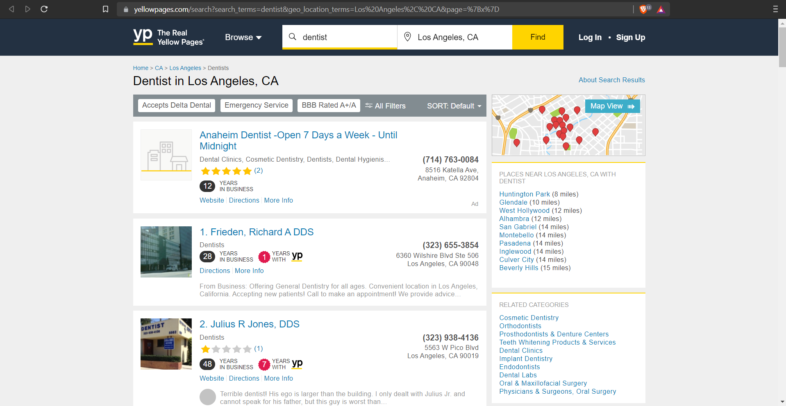
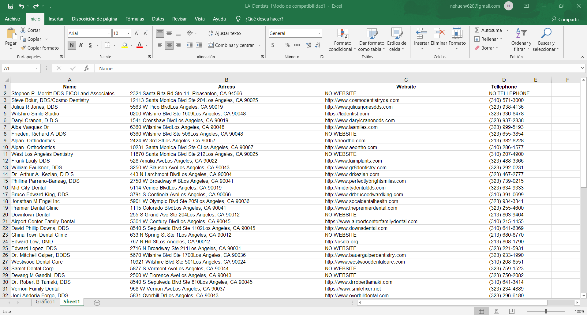

Yellow Pages Scraping
This is a simple project based on python and Beautiful Soup, which gets certain information specified by the developer from yellow pages, under a certain search them (in this case: "dentists in LA") and sends them to an excel file (wich could easily be a JSON file, .CSV, google sheets, or even a SQL/noSQL data-base).
 Using this kind of programs it is possible to get information from any kind of yellow pages and in any amounts, for example, information from 10.000 businesses including E-mails (if they exist), wich is very useful to generate leads, get information about the competition and so on.
Skills used in this project
- Python Programing Language
- Beautiful Soup 4 library
- Pandas library
- Excel Sheets